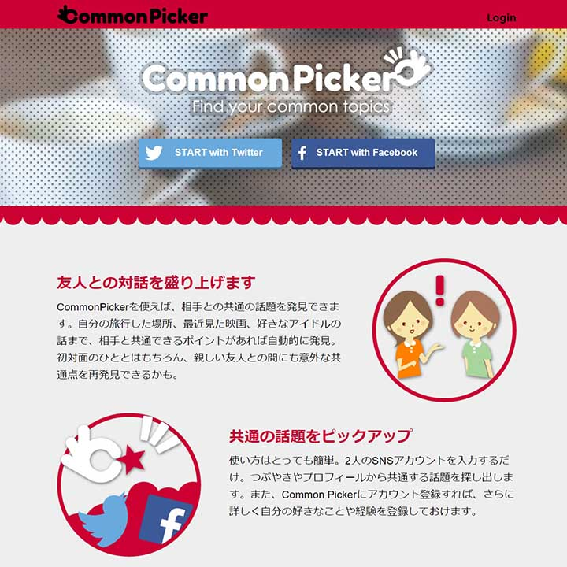
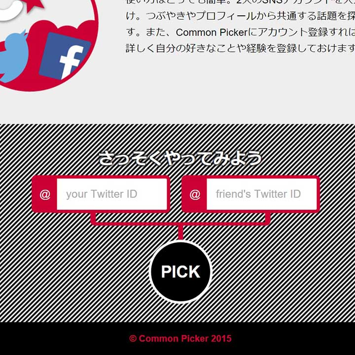
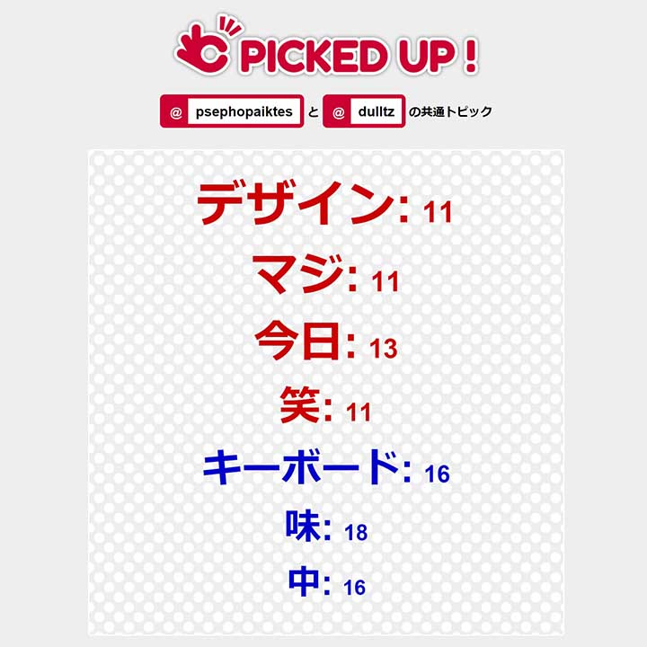
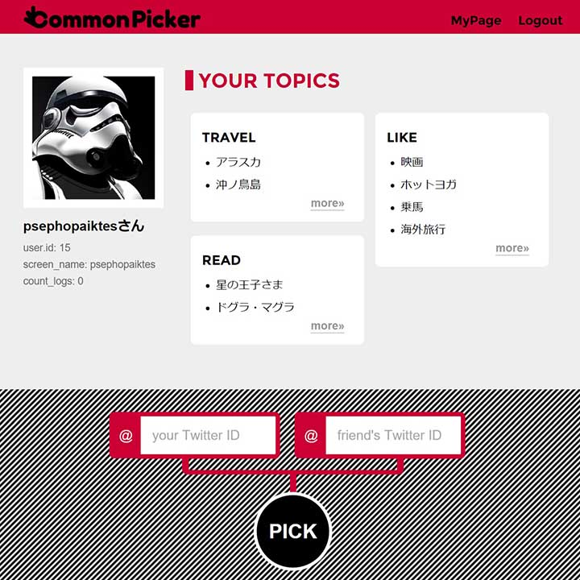

Akira HIRATA

- 
- 
- 
- 

CommonPicker
2015/11東京で開催されたハッカソン：Hackerwars参加作品。簡単に共通の話題を見つけられる素敵なサービスです。3人チームで参加し、平田は企画やフロントエンド開発を担当。楽しそうで、誰でも簡単な操作で使えるデザインを目指しました。最優秀賞、じげん企業賞を受賞。
- Web Design
- HTML/CSS
- Responsive
- Planning
東京で開催されたハッカソン：Hackerwars参加作品。簡単に共通の話題を見つけられる素敵なサービスです。3人チームで参加し、平田は企画やフロントエンド開発を担当。楽しそうで、誰でも簡単な操作で使えるデザインを目指しました。最優秀賞、じげん企業賞を受賞。